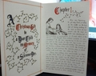
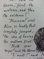

 
『アリス』が、作者のルイス・キャロルが実在の少女アリス・リデルに書いたものが元になっているというのはよく知られた話です。彼は、自分で手書きの文章と挿絵からなる書物をアリスに贈ったのですが、その『原アリス』とでもいうべき物語のタイトルが上記。
で、これを元にして加筆修正して出版されたのが、"Alice's Adventures in Wonderland"。後にキャロルは贈った書物をアリスから借りて復刻して出版したらしい。その復刻版のアリスの原本と邦訳して『不思議の国』の有名なテニエルの挿絵を原アリスの挿絵と対応する箇所にはめ込んだもの二冊をセットにしてあるのが『不思議の国のアリス・オリジナル』。
ふ～、疲れた。
というわけで、Amazonで思い切って買ってしまったのですが、何しろ作者手書き原稿そのままということで、心配だったのが、意味が分かるかどうかの前に、判読できるかどうかということ。
もしかしたら他にも同じ思いで二の足を踏んでいる人がいるかも知れないので、写真を載せます。
決して特別読みやすくはないけど、特別読みにくくもなくて一安心。内容は、後に"Wonderland"になったものの半分くらいの量らしく、後から付け加えられた部分と比べると大分やさしそうです。
ちょっと見た限りでは巻頭詩を始めとしたあのワケワカな詩がない。それとテニエルの挿絵で僕が好きな、アリスがChesire Catに出会う場面とかがないみたいだな。
昔、"Wonderland"と"Throught the Looking Glass"とシリーズになってたテニエル挿絵のペイパーバックを持っていたんだけど、なくなっちゃったなあ…。